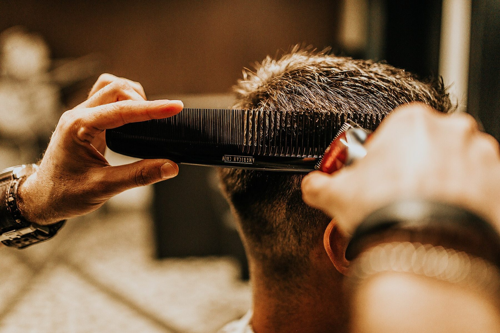

Barberoka
Frizerie pe Strada George Vâlsan 31, Sector 6.
Sunați la 0771 220 5834,9 din 394 de recenzii pe Google.
Salonul
Un salon de tuns, pentru bărbați și nu numai, și un loc de socializare. Tipurile de tunsoare nu sunt publicate.
Machiaj și tratamente faciale pentru doamne, cu Andreea Stoica.
Nu sunt publicate prețuri. Sunați pentru timp și preț.
Program
- Luni până vineri10:00–21:00
- Sâmbătă09:00–18:00
- DuminicăÎnchis
Treceți sau sunați
Strada George Vâlsan 31, Sector 6, București.
0771 220 583 barberokabarbershop@gmail.com Deschideți harta Facebook